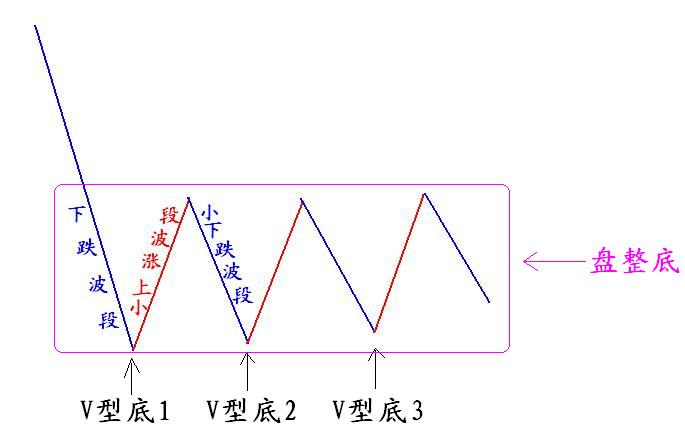
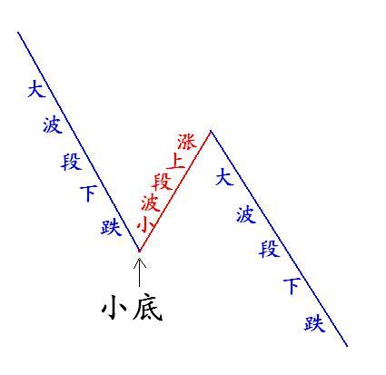
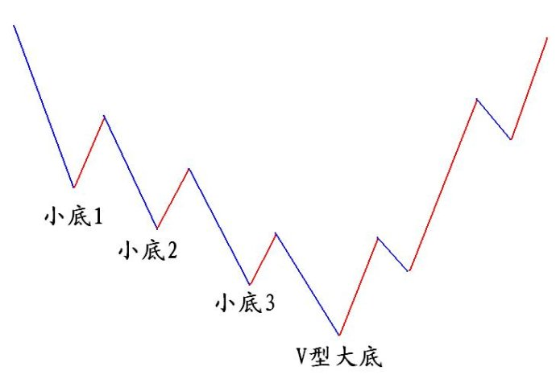

第118篇•教你炒股系列30：左侧挖掘牛股的方法（2）
谷为陵
因为小底和大底的问题非常重要，所以，我今天还要就此问题再说几句。
要进行左侧交易，关键就是要抄到股价的大底，但要做到这一点并不容易，这是因为股价在下跌过程中，会不断因止跌反弹而形成很多的小底。在投资者搞不清小底和大底的区别的情况下，就会将这些小底误认为是大底而不断抢进，最终形成误操作。
若将股价运行的上涨、下跌、盘整这三种趋势进行组合，可得12种组合趋势形式：
（1）下跌——上涨——下跌；（2）下跌——上涨——盘整；
（3）下跌——盘整——上涨；（4）下跌——盘整——下跌；
（5）上涨——下跌——上涨；（6）上涨——下跌——盘整；
（7）上涨——盘整——上涨；（8）上涨——盘整——下跌；
（9）盘整——上涨——下跌；（10）盘整——上涨——盘整；
（11）盘整——下跌——上涨；（12）盘整——下跌——盘整。
在以上12种组合趋势中，除了组合（7）和组合（10）外，其它组合均能形成底部。这些趋势组合都很重要，但细致讨论起来非常复杂，因篇幅所限，我们今天只进行上篇博文曾提及的“下跌——上涨”组合的延伸讨论。
我在上文中曾谈到，“下跌——上涨”组合形成的是V型底，但这个V型底是大底还是小底，取决于该V型底右侧的上涨波段的大小。若该V型底右侧上涨波段是一个中大波段，那么，这个V型底就是一个中期或者大底，若该V型底右侧上涨波段是一个小波段，那么，这个V型底就是一个小底。现在的问题是，若这个底是小底，那么，这个小底还有什么样的发展方向呢？是继续下跌，还是在该小底附近进行盘整而形成新的盘整底呢？这就需要对“下跌——上涨”组合进行更深入的探讨。
在“下跌——上涨”之后，可有两种发展趋势：一是转而下跌，形成“下跌——上涨——下跌”组合；二是进入盘整，形成“下跌——上涨——盘整”组合。
我们重点讨论一下“下跌——上涨——下跌”组合，为方便讨论，我将该组合中的两个下跌波段分别标示为“下跌①”和“下跌②”，则该组合可标示为“下跌①——上涨——下跌②”。在该组合中的上涨波段为小波段的情况下，随着“下跌②”波段大小的不同，该组合形成的底部就会出现两种不同的情况：
第一种情况，当下跌②为小波段时，股价就跌不下去，股价会在此将小V型底演变成为盘整底，实际上盘整底可看成是很多小的V型底组合而成的。如下图所示：

第二种情况，当下跌②为大波段时，股价就会跌破前期的小底而继续跌下去，形成新的下跌趋势，如下图所示：

若以上的“下跌——上涨——下跌——上涨……”这个过程持续进行下去，那么，股价就会在下跌过程中形成很多小底，直至股价见到大底为止，如下图所示：

当然，股价在持续下跌后，除了能够形成V型大底外，还有可能形成一个盘整大底。在一个大级别的熊市中，股价在见到大底之前，一定会持续大幅下跌，期间会形成很多小底，而这些小底就如同陷阱，对抄底者不仅具有极大的迷惑性，且杀伤力很强。所以，在熊市中，当一只股票开始下跌的时候，不要频繁对其抄底，要耐心等待股价接近大底。
那么，在熊市末期，股价在什么情况下才会出现大底呢？我认为有两个硬性条件：一是股价累计跌幅巨大，二是股价已经接近股票的内在价值。
(未完待续)